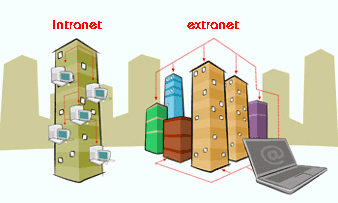

EXTRANET |
||
DefiniciónEs una Intranet "extendida", que permite el acceso no sólo al personal de la organización sino también a usuarios autorizados que sin pertenecer a ella, se relacionan a través de procesos o transacciones, como pueden ser clientes, proveedores, empresas vinculadas, etc. Una Extranet permite a éstos tener acceso limitado a la información que necesitan de la Intranet de la empresa, con la intención de aumentar la velocidad y la eficiencia de su relación de negocio. Estos sistemas son el siguiente elemento a incorporar por las empresas en su transición tecnológica (después de los sitios en Internet y las intranets), ya que permiten obtener beneficios tangibles de un sitio web. Ya no se trata únicamente de un sitio informativo que explica la misión, historia e infraestructura de la empresa, o expone la forma de contactar con ella, lo que comúnmente se denomina un "sitio institucional" de la empresa, sino de un espacio en línea donde se pueden incorporar aplicaciones y herramientas tecnológicas para acelerar los procesos diarios de negocio. Por ejemplo, se pueden crear aplicaciones para realizar órdenes de compra en forma automatizada, o bien crear reportes de venta. Además, las Extranet ayudan a disminuir los costos de operación, debido a que reducen los gastos administrativos, los de telefonía y papel. En un ambiente de negocios electrónicos (e-business), las empresas pueden vincular electrónicamente sus procesos clave para formar grupos virtuales, donde se logra un nivel de integración tan alto que es difícil decir dónde una compañía comienza y otra termina. Mientras que la venta por Internet a consumidores finales ha tenido mayor repercusión en los medios de comunicación, muchos analistas creen que el negocio entre empresas - Business to Business - es el sector donde está el mayor potencial para la aplicación de la tecnología de Internet. CaracterísticasLa extranet está compuesta por una parte externa y por sistemas de seguridad de acceso. Estos últimos son la base para el éxito y fiabilidad de la red externa. Las conexiones que se realizan en una extranet entre computadoras deben ser muy seguras, creando una red privada virtual, donde se emplean líneas de comunicación públicas y económicas. En muchos casos, la protección que ofrecen los sistemas estándar de clave o contraseña de los navegadores Internet basta para salvaguardar la integridad de la información almacenada. Para mayores niveles de seguridad se puede recurrir a la tecnología de túnel que utiliza protocolos más complejos. Esta tecnología permite transportar datos entre dos puntos mediante técnicas de encapsulación de un protocolo dentro de otros. Estos túneles de seguridad también pueden ser usados de forma individual para proteger un sitio Web, proporcionando sólo acceso al usuario que esté autorizado. Extranet es muy parecido al Internet con las mismas características que este, pero enfocado al entorno de la empresa, lo que permite una mayor comunicación entre las empresas, favoreciendo la producción y reduciendo sus costos. Las compañías pueden usar la extranet para:
| ||
|  | ||
Regresar |